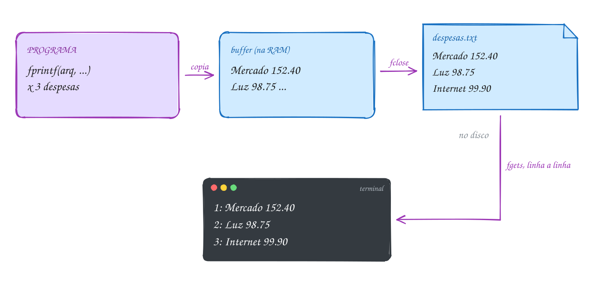
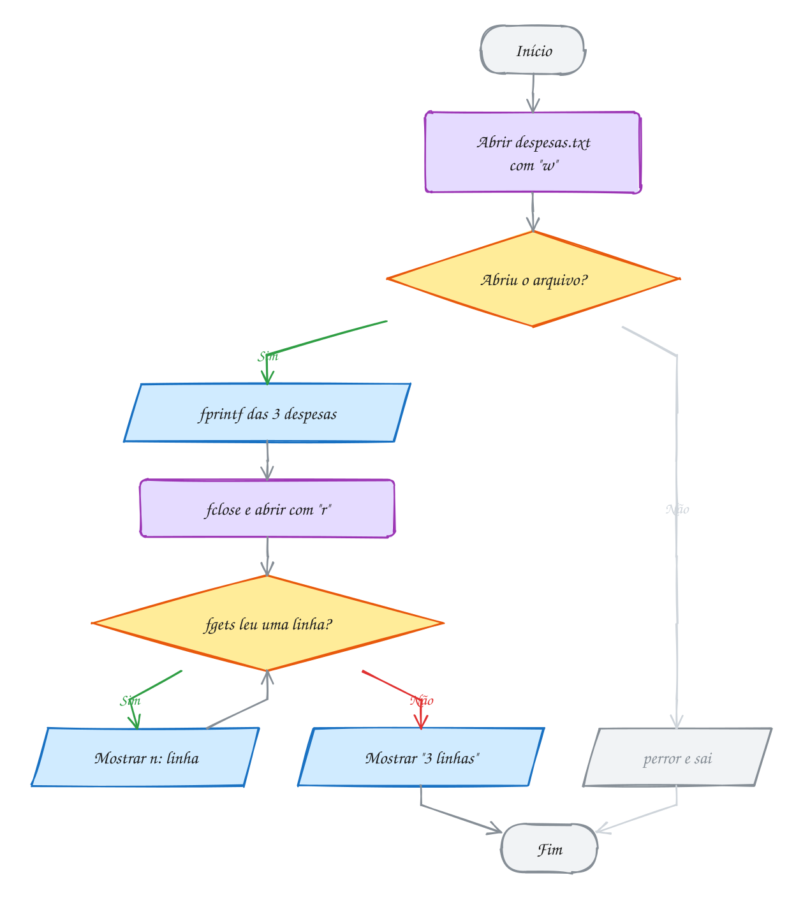
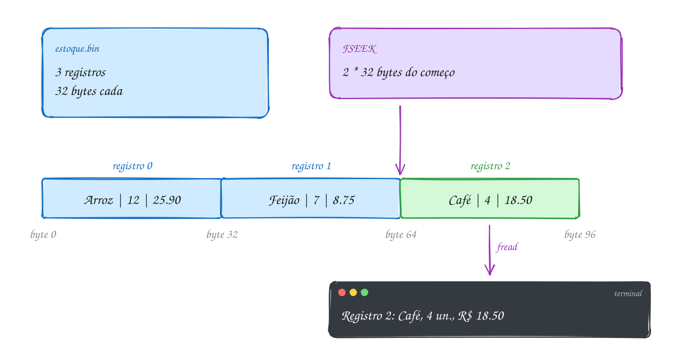
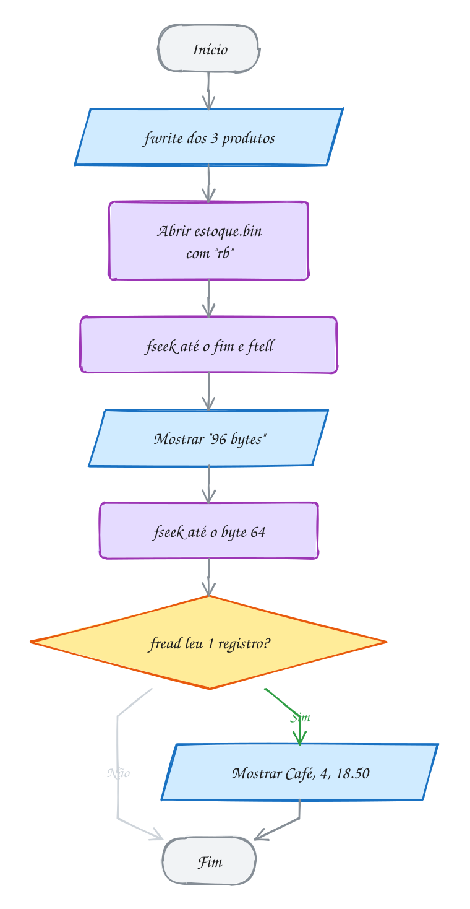
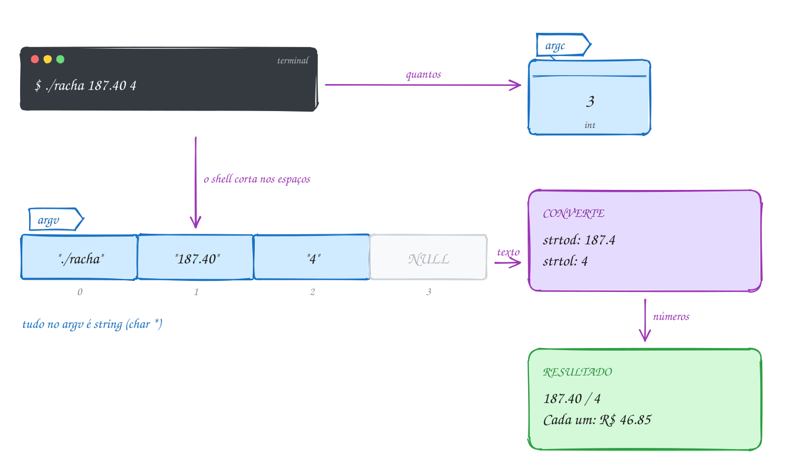
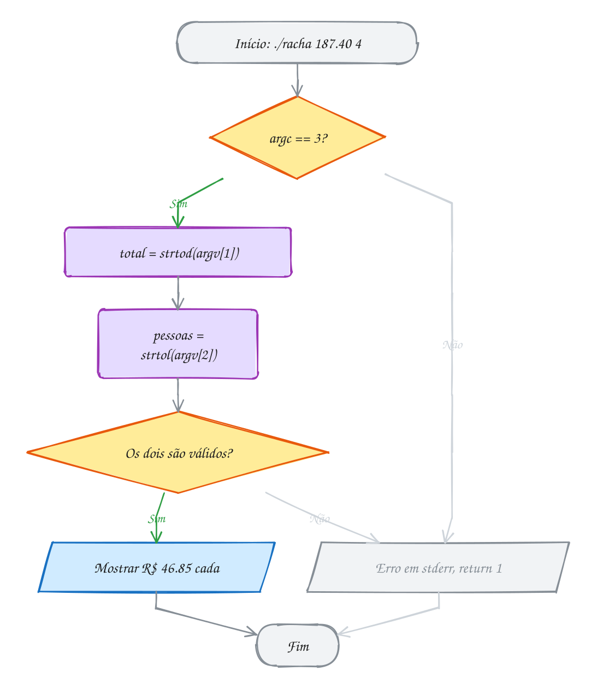
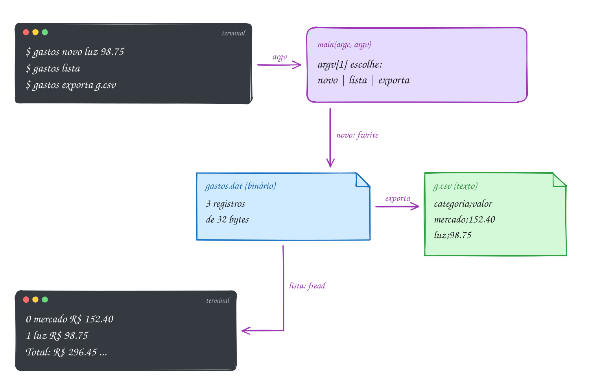
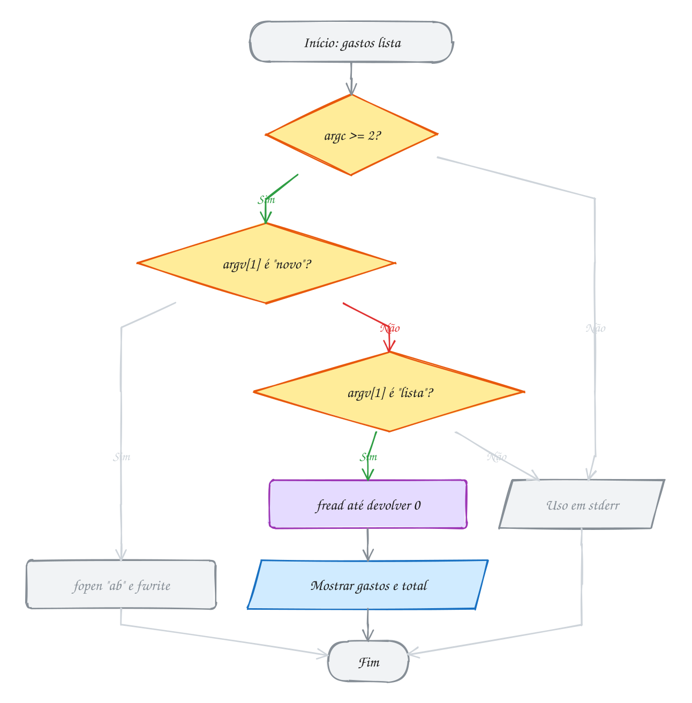

[!IMPORTANT] Mundo 2 · Memória e dados · Rota do jogo: etapa 10 de 29
Missão: ler e gravar arquivos e receber argumentos na linha de comando.
Vem de: Módulo 27 · Detalhes de C que caem em prova. Segue para: Módulo 10 · Pensar como cientista da computação.
Checkpoints desta fase:
- Ler os assuntos 0067 a 0070 e refazer os exemplos
- Resolver os 4 exercícios de cada assunto, escrevendo o código sozinho
- Fechar a lista prática (P0901 a P0930)
- Enfrentar os desafios do módulo
- Chefão: resolver as questões de prova do módulo sem consultar
Como fazer o programa lembrar depois de terminar: arquivos texto, arquivos
binários com acesso direto a um registro e argumentos da linha de comando.
Depende de structs (módulo 08), fgets (0042) e ponteiros; prepara o módulo
10 e a busca binária em disco (0090).
fopen, fprintf, fgets, fscanf, fgetc, fclose)"r", "w" e "a", o buffer e por que nunca usar while (!feof(f))fwrite e fread, e acesso direto a um registro com fseek e ftellargc e argv, converter com strtol e strtod e devolver o código de saídaOs exemplos gravam em /tmp e quase todos apagam o arquivo no fim com
remove; quando um o deixa lá, o comentário avisa. Nenhum depende de arquivo
pré-existente. Para passar argumentos, escreva-os depois do executável:
gcc ~/LPEDC/material/A137.c -o ~/LPEDC/material/A137 && ~/LPEDC/material/A137 -r 7 -a 4
Duas ferramentas mostram o que os programas gravam: od -A d -t x1 arquivo
(bytes em hexadecimal, já vem no sistema) e o strace (chamadas ao sistema,
como cada write):
sudo pacman -S strace # Arch Linux
sudo apt install strace # Debian / Ubuntu
| # | Assunto |
|---|---|
| 0067 | Arquivos texto |
| 0068 | Arquivos binários |
| 0069 | Argumentos da linha de comando |
| 0070 | Juntando tudo: a caderneta de gastos |
[!NOTE] Cada assunto é um capítulo: Conceito (a explicação), Exemplos de uso (programas que compilam sozinhos: rode com o comando abaixo de cada um e compare com a saída no fim do código) e Exercícios (cada um é um arquivo em
material/com o esqueleto, as dicas e o espaço para a resposta; resoluções em_respostas/09-arquivos/).
Todo programa que você escreveu até aqui esquece tudo ao terminar. As variáveis moram na RAM, a memória de trabalho do computador, e somem quando o programa acaba. Se ele calcula as despesas do mês, na próxima execução começa do zero. Para lembrar de uma vez para outra, o programa precisa guardar os dados no disco, que mantém o conteúdo mesmo com a máquina desligada.
É a diferença entre anotar as despesas de cabeça e anotar num caderno. O
caderno do programa é o arquivo: uma sequência de bytes guardada no
disco, com um nome, que continua lá depois que o programa termina (BACKES,
2013, cap. 12). Num arquivo texto, esses bytes são caracteres que você
lê num editor comum. O número 152.40 não fica guardado como um double de 8
bytes, mas como os seis caracteres '1' '5' '2' '.' '4' '0' (BACKES, 2013,
cap. 12). O assunto 0068 mostra a outra opção, o arquivo binário.
Trabalhar com arquivo sempre segue três passos: abrir, ler ou
escrever e fechar. Todas as funções vêm do <stdio.h>, o mesmo
cabeçalho do printf (KERNIGHAN; RITCHIE, 1989, cap. 7).
Para abrir, use fopen(caminho, modo). O caminho é o nome do arquivo, como
"despesas.txt" ou "/tmp/despesas.txt". O modo diz o que você quer fazer:
"r" para ler, "w" para escrever do zero, "a" para acrescentar no fim.
O fopen devolve um FILE *, um ponteiro para uma struct que a biblioteca
usa para controlar o arquivo; você nunca mexe nos campos dela, só passa o
ponteiro adiante. Se o arquivo não abrir, porque a pasta não existe, falta
permissão ou o disco encheu, o fopen devolve NULL. Por isso todo fopen
vem seguido de um if, e o perror("Erro ao abrir") escreve o motivo, como
No such file or directory (CELES; RANGEL, 2002). A tabela mostra o que
cada modo faz com um arquivo que existe ou não:
| modo | o que faz | se o arquivo não existe | se já existe |
|---|---|---|---|
"r" |
só leitura | fopen devolve NULL |
lê do começo |
"w" |
só escrita | cria vazio | apaga tudo e começa vazio |
"a" |
escrita no fim (append) | cria vazio | mantém e escreve depois do fim |
"r+" "w+" "a+" |
leitura e escrita | como r, w e a |
como r, w e a |
Para escrever, você já conhece quase tudo. fprintf(arq, "Luz %.2f\n", 98.75) é o printf com o arquivo como primeiro argumento, e usa o mesmo
molde do assunto 0005. fputs(texto, arq) grava uma string inteira, sem
acrescentar \n, e fputc(c, arq) grava um caractere (BACKES, 2013,
cap. 12).
Para ler, há três jeitos, e cada um devolve um valor que diz se deu certo
(CELES; RANGEL, 2002). fgets(linha, tamanho, arq) traz uma linha inteira,
com o \n no fim, e devolve NULL quando o arquivo acaba; é o mesmo fgets
do assunto 0042, lendo do arquivo. fscanf(arq, "%s %lf", nome, &valor) lê
campos com formato, como o scanf, e devolve quantos campos conseguiu ler.
fgetc(arq) lê um caractere e devolve um int, que vale a constante EOF
(end of file, fim de arquivo) quando não há mais nada.
Por fim, fclose(arq) fecha. Ele importa mais do que parece, por causa do
buffer: o fprintf não vai ao disco a cada chamada, porque o disco é
lento. Ele copia os bytes para uma área na RAM, e só quando essa área enche,
ou no fflush(arq), ou no fclose, os bytes descem para o disco. Se o
programa cair antes do fclose, o que estava no buffer se perde (BACKES,
2013, cap. 12). Como no malloc: abriu, fecha.
Você já usou três arquivos sem abrir nenhum. stdin (o teclado), stdout (a
tela) e stderr (a saída de erros) são FILE * que o programa recebe
abertos. printf("oi") é o mesmo que fprintf(stdout, "oi"), e
fgets(linha, 100, stdin) lê do teclado (FEOFILOFF, 2009, ap. H).
[!WARNING] Não use
while (!feof(arq)): ofeofsó fica verdadeiro depois que uma leitura falhou, e a última linha é processada duas vezes. Teste o retorno da leitura (fgets(...) != NULL,fscanf(...) == 2). Comfgetc, guarde emint, não emchar: numchar, oEOF(-1) se confunde com um byte real.
O programa grava as três despesas do mês (mercado, luz, internet) em
/tmp/despesas.txt, reabre o arquivo em leitura e o fgets traz as linhas,
uma por vez:

#include <stdio.h>
int main(void) {
const char *caminho = "/tmp/despesas.txt";
FILE *arq = fopen(caminho, "w"); // "w": cria (ou apaga) o arquivo
if (arq == NULL) {
perror("Erro ao criar o arquivo");
return 1;
}
fprintf(arq, "Mercado %.2f\n", 152.40); // printf, mas no arquivo
fprintf(arq, "Luz %.2f\n", 98.75);
fprintf(arq, "Internet %.2f\n", 99.90);
fclose(arq); // descarrega o buffer no disco
arq = fopen(caminho, "r"); // agora para ler
if (arq == NULL) {
perror("Erro ao abrir o arquivo");
return 1;
}
char linha[100];
int n = 0;
while (fgets(linha, sizeof linha, arq) != NULL) { // NULL = acabou
n++;
printf("%d: %s", n, linha); // a linha já traz o '\n'
}
fclose(arq);
printf("%d linhas em %s\n", n, caminho);
return 0;
}
// Saída:
// 1: Mercado 152.40
// 2: Luz 98.75
// 3: Internet 99.90
// 3 linhas em /tmp/despesas.txt
A leitura é um laço que testa o retorno do fgets: o fim do arquivo é
anunciado pela leitura que falhou:

Exemplo A133 · A linha maior que o buffer
#include <stdio.h>
#include <string.h>
// O fgets nunca passa do tamanho que você dá: se a linha não cabe, ela chega
// em pedaços. Quem diz se a linha acabou é o '\n' no fim do pedaço.
int main(void) {
const char *caminho = "/tmp/recados.txt";
FILE *arq = fopen(caminho, "w");
if (arq == NULL) {
perror(caminho);
return 1;
}
fputs("Pagar luz\n", arq); // 9 letras + '\n'
fputs("Levar o carro na revisao de sabado\n", arq); // não cabe em 12
fputs("Pix\n", arq);
fclose(arq);
arq = fopen(caminho, "r");
if (arq == NULL) {
perror(caminho);
return 1;
}
char pedaco[12]; // cabem 11 caracteres + o '\0'
int chamadas = 0;
int linhas = 0;
while (fgets(pedaco, sizeof pedaco, arq) != NULL) {
chamadas++;
size_t n = strlen(pedaco);
int fim_da_linha = n > 0 && pedaco[n - 1] == '\n';
if (fim_da_linha) {
pedaco[n - 1] = '\0'; // tira o '\n' só para mostrar
linhas++;
}
printf("fgets %d: [%s]%s\n", chamadas, pedaco,
fim_da_linha ? " <- fim da linha" : "");
}
fclose(arq);
remove(caminho);
printf("%d chamadas do fgets, %d linhas\n", chamadas, linhas);
return 0;
}
// Saída:
// fgets 1: [Pagar luz] <- fim da linha
// fgets 2: [Levar o car]
// fgets 3: [ro na revis]
// fgets 4: [ao de sabad]
// fgets 5: [o] <- fim da linha
// fgets 6: [Pix] <- fim da linha
// 6 chamadas do fgets, 3 linhas
gcc ~/LPEDC/material/A133.c -o ~/LPEDC/material/A133 && ~/LPEDC/material/A133
Exemplo A134 · Acrescentar e somar
#include <stdio.h>
// Grava duas contas com "w", acrescenta uma terceira com "a" e depois lê tudo
// com fscanf para somar. No fim apaga o arquivo com remove.
int main(void) {
const char *caminho = "/tmp/contas-do-mes.txt";
FILE *arq = fopen(caminho, "w");
if (arq == NULL) {
perror(caminho);
return 1;
}
fprintf(arq, "Aluguel 1200.00\n");
fprintf(arq, "Academia 89.90\n");
fclose(arq);
arq = fopen(caminho, "a"); // "a": escreve no fim, sem apagar nada
if (arq == NULL) {
perror(caminho);
return 1;
}
fprintf(arq, "Streaming 39.90\n");
fclose(arq);
arq = fopen(caminho, "r");
if (arq == NULL) {
perror(caminho);
return 1;
}
char nome[30];
double valor;
double total = 0.0;
// fscanf devolve quantos campos conseguiu ler: 2 = linha completa
while (fscanf(arq, "%29s %lf", nome, &valor) == 2) {
printf("%-10s R$ %8.2f\n", nome, valor);
total += valor;
}
fclose(arq);
printf("%-10s R$ %8.2f\n", "Total", total);
remove(caminho); // apaga o arquivo do disco
return 0;
}
// Saída:
// Aluguel R$ 1200.00
// Academia R$ 89.90
// Streaming R$ 39.90
// Total R$ 1329.80
gcc ~/LPEDC/material/A134.c -o ~/LPEDC/material/A134 && ~/LPEDC/material/A134
Exercício E397 · ★☆☆
Grave a tabuada do 7 no arquivo /tmp/tabuada7.txt, uma conta por linha, usando fprintf. Feche o arquivo, abra de novo em modo leitura e mostre o conteúdo na tela com fgets. Confira se o fopen deu certo nas duas vezes.
Saída esperada:
7 x 1 = 7
7 x 2 = 14
7 x 3 = 21
7 x 4 = 28
7 x 5 = 35
7 x 6 = 42
7 x 7 = 49
7 x 8 = 56
7 x 9 = 63
7 x 10 = 70
Exercício E399 · ★★☆
Faça um "wc" caseiro. Primeiro, grave em /tmp/recado.txt exatamente estas três linhas (cada uma termina com '\n'):
Feira no domingo
leve sacolas
e o dinheiro do pastel
Depois, abra o arquivo para leitura e leia caractere por caractere com fgetc, contando linhas, palavras e caracteres (bytes).
Saída esperada:
Linhas: 3
Palavras: 10
Caracteres: 53
Exercício E400 · ★★☆
Escreva um programa que cria o arquivo /tmp/turma.txt com fprintf, uma linha por aluno com o nome e duas notas: "Bruna 9.0 7.5", "Diego 4.0 7.0" e "Lia 6.5 7.5". Feche, reabra para leitura e leia com fscanf num laço que pare quando a linha não vier completa. Mostre a média de cada um e a situação (aprovado com média >= 7.0) e, no fim, a média da turma. Confira os fopen e apague o arquivo no final.
Saída esperada:
Bruna média 8.25 aprovada(o)
Diego média 5.50 reprovada(o)
Lia média 7.00 aprovada(o)
Média da turma: 6.92
Exercício E402 · ★★★
Lista de compras automática. Escreva um programa que:
"ovos 2" e "sabao 6" (produto e quantidade em casa);
/tmp/comprar.txt só os produtos com menos de 5 unidades, já com quanto
falta para chegar a 5 ("arroz 2");
fopen falhar, feche o primeiro arquivo antes de sair.
Saída esperada:
Comprar:
- arroz: 2
- cafe: 5
- ovos: 3
3 itens na lista
O arquivo texto tem um limite. Cada linha tem um tamanho diferente: "Luz
98.75" tem 9 caracteres, "Internet 99.90" tem 14. Para chegar à linha 500, o
programa precisa ler as 499 anteriores, contando os \n, porque não há como
saber em que byte ela começa. E cada número passa por uma conversão na ida
(double para texto) e outra na volta (texto para double).
Pense no estoque do mercadinho guardado em fichas todas do mesmo tamanho,
numa gaveta. Para pegar a terceira ficha, ninguém lê as duas primeiras: mede
com o dedo e puxa. O arquivo binário permite isso. Ele grava os bytes
exatamente como estão na memória, sem converter nada em texto, e por
isso um int ocupa sempre 4 bytes no disco, e uma struct ocupa sempre o seu
sizeof (BACKES, 2013, cap. 12).
Quando todos os registros têm o mesmo tamanho, a posição de cada um vira uma
conta. Um registro aqui é uma struct gravada no arquivo, como um
Produto de 32 bytes. O registro 0 começa no byte 0, o registro 1 no byte
32, e o registro i começa no byte i * sizeof(Produto) (DEITEL; DEITEL,
2011, cap. 11). Com essa conta, o programa vai direto ao registro que quer.
Para abrir um arquivo binário, acrescente um b ao modo: "wb", "rb",
"ab", "rb+". No Linux e no Mac, o b não muda nada. No Windows, sem ele,
a biblioteca troca cada \n por \r\n ao gravar, e qualquer byte de valor
10 no meio de um número sai estragado (BACKES, 2013, cap. 12). Escreva o b
sempre, e o programa funciona nos dois sistemas.
Para gravar, use fwrite(endereco, tamanho, quantidade, arq). Ele copia
tamanho * quantidade bytes a partir do endereço que você deu. Uma variável
ou uma struct vai com & (fwrite(&p, sizeof p, 1, arq)); um vetor já é
endereço e vai sem & (fwrite(estoque, sizeof(Produto), 3, arq) grava os
três produtos de uma vez). O fread, com os mesmos argumentos, faz o caminho
de volta. Os dois devolvem quantos itens processaram, e não quantos
bytes. Se o fread devolver menos que o pedido, o arquivo acabou ou deu erro,
e é esse retorno que vai na condição do while (BACKES, 2013, cap. 12).
Para pular até um registro, use fseek(arq, deslocamento, origem). A origem
diz de onde contar: SEEK_SET é o começo do arquivo, SEEK_CUR é a posição
atual e SEEK_END é o fim. O deslocamento é um long e pode ser negativo.
fseek(arq, 2 * sizeof(Produto), SEEK_SET) põe a posição no byte 64, e o
próximo fread traz o registro 2. O fseek não lê nada: ele só troca um
número guardado no FILE. Pular para o registro 2 custa o mesmo que pular
para o registro 2 milhões (DEITEL; DEITEL, 2011, cap. 11).
Duas funções completam o conjunto. ftell(arq) devolve a posição atual em
bytes, e rewind(arq) volta ao byte 0. Juntando fseek(arq, 0, SEEK_END) e
ftell(arq), você mede o arquivo; dividindo pelo sizeof do registro,
descobre quantos registros ele tem (BACKES, 2013, cap. 12).
O acesso direto abre uma possibilidade grande. Com os registros gravados em
ordem de código, dá para fazer busca binária direto no arquivo: fseek
no registro do meio, fread, compara, descarta a metade que não serve e
repete. Uns 20 fread acham um registro entre 1 milhão, sem carregar o
arquivo na RAM (ZIVIANI, 2010). A busca binária é o assunto 0090.
A tabela resume o que muda entre os dois tipos de arquivo:
texto (fprintf) |
binário (fwrite) |
|
|---|---|---|
o int 12345678 |
8 bytes: '1' '2' ... '8' |
4 bytes: 4E 61 BC 00 |
| abre no editor? | sim | vira lixo na tela |
| converte na ida e na volta? | sim (mais lento) | não, só copia bytes |
acesso direto ao registro i? |
não | sim, com fseek |
| lê em outra máquina? | sim | só se int, alinhamento e ordem dos bytes forem iguais |
[!WARNING]
fwritecopia bytes, não dados. Struct com ponteiro (char *nome) grava o endereço, que não aponta para nada na próxima execução: usechar nome[20]. E um.binpode não ser lido igual em outra máquina (tamanho doint, alinhamento, ordem dos bytes): para trocar dados, use texto.
O estoque do mercadinho tem três produtos de 32 bytes cada. Um fwrite grava
os três (96 bytes). Para ler o café, o programa pula 2 × 32 = 64 bytes e faz um
fread de um registro:

#include <stdio.h>
typedef struct {
char nome[20];
int qtd;
double preco;
} Produto;
int main(void) {
const char *caminho = "/tmp/estoque.bin";
Produto estoque[3] = {
{"Arroz", 12, 25.90},
{"Feijão", 7, 8.75},
{"Café", 4, 18.50},
};
FILE *arq = fopen(caminho, "wb");
if (arq == NULL) {
perror(caminho);
return 1;
}
size_t gravados = fwrite(estoque, sizeof(Produto), 3, arq); // vetor: sem &
fclose(arq);
printf("Cada registro: %zu bytes\n", sizeof(Produto));
printf("Gravados: %zu registros\n", gravados);
arq = fopen(caminho, "rb");
if (arq == NULL) {
perror(caminho);
return 1;
}
fseek(arq, 0, SEEK_END); // vai para o fim...
printf("Arquivo: %ld bytes\n", ftell(arq)); // ...e pergunta a posição
Produto p;
fseek(arq, 2 * sizeof(Produto), SEEK_SET); // byte 64: começo do registro 2
if (fread(&p, sizeof(Produto), 1, arq) == 1) {
printf("Registro 2: %s, %d un., R$ %.2f\n", p.nome, p.qtd, p.preco);
}
fclose(arq);
remove(caminho);
return 0;
}
// Saída:
// Cada registro: 32 bytes
// Gravados: 3 registros
// Arquivo: 96 bytes
// Registro 2: Café, 4 un., R$ 18.50
Não há laço até o café: são dois fseek e um fread, com 3 registros ou 3
milhões:

Exemplo A135 · Ler em lotes: o retorno do fread
#include <stdio.h>
// O fread devolve quantos itens leu de verdade. Pedindo 3 de cada vez num
// arquivo com 7, vêm 3, 3, 1 e depois 0. O último lote vem incompleto, e é o
// retorno (não o tamanho do vetor) que diz quantos valem.
int main(void) {
const char *caminho = "/tmp/passos.bin";
int passos[7] = {8200, 10450, 6300, 12010, 9800, 4100, 11500}; // da semana
FILE *arq = fopen(caminho, "wb");
if (arq == NULL) {
perror(caminho);
return 1;
}
fwrite(passos, sizeof(int), 7, arq);
fclose(arq);
arq = fopen(caminho, "rb");
if (arq == NULL) {
perror(caminho);
return 1;
}
int lote[3];
size_t lidos;
long total = 0;
int dia = 1;
while ((lidos = fread(lote, sizeof(int), 3, arq)) > 0) {
printf("Pedi 3, vieram %zu:", lidos);
for (size_t i = 0; i < lidos; i++) { // só os que vieram
printf(" dia %d=%d", dia, lote[i]);
total += lote[i];
dia++;
}
printf("\n");
}
printf("Pedi 3, vieram 0: fim (feof = %d)\n", feof(arq) != 0);
// fseek para depois do fim não dá erro, mas o fread não acha nada
fseek(arq, 100 * (long) sizeof(int), SEEK_SET);
long posicao = ftell(arq);
int x = -1;
size_t r = fread(&x, sizeof x, 1, arq);
printf("No byte %ld: fread devolveu %zu, x continua %d\n", posicao, r, x);
fclose(arq);
remove(caminho);
printf("Total da semana: %ld passos\n", total);
return 0;
}
// Saída:
// Pedi 3, vieram 3: dia 1=8200 dia 2=10450 dia 3=6300
// Pedi 3, vieram 3: dia 4=12010 dia 5=9800 dia 6=4100
// Pedi 3, vieram 1: dia 7=11500
// Pedi 3, vieram 0: fim (feof = 1)
// No byte 400: fread devolveu 0, x continua -1
// Total da semana: 62360 passos
gcc ~/LPEDC/material/A135.c -o ~/LPEDC/material/A135 && ~/LPEDC/material/A135
Exemplo A136 · O mesmo número em texto e em binário
#include <stdio.h>
// Mostra o tamanho do arquivo e cada byte dele em hexadecimal
void mostrar_bytes(const char *caminho) {
FILE *arq = fopen(caminho, "rb");
if (arq == NULL) {
perror(caminho);
return;
}
fseek(arq, 0, SEEK_END);
long tamanho = ftell(arq);
rewind(arq); // volta para o byte 0
printf("%-18s %ld bytes:", caminho, tamanho);
int c;
while ((c = fgetc(arq)) != EOF) {
printf(" %02X", c);
}
printf("\n");
fclose(arq);
}
int main(void) {
int codigo = 12345678;
FILE *txt = fopen("/tmp/codigo.txt", "w");
FILE *bin = fopen("/tmp/codigo.bin", "wb");
if (txt == NULL || bin == NULL) {
perror("fopen");
if (txt != NULL) fclose(txt);
if (bin != NULL) fclose(bin);
return 1;
}
fprintf(txt, "%d", codigo); // vira os caracteres '1' '2' ... '8'
fwrite(&codigo, sizeof codigo, 1, bin); // copia os 4 bytes do int
fclose(txt);
fclose(bin);
mostrar_bytes("/tmp/codigo.txt");
mostrar_bytes("/tmp/codigo.bin");
// ler de volta o binário: os 4 bytes voltam direto para um int
int lido = 0;
bin = fopen("/tmp/codigo.bin", "rb");
if (bin != NULL) {
if (fread(&lido, sizeof lido, 1, bin) == 1) {
printf("Lido do binário: %d\n", lido);
}
fclose(bin);
}
remove("/tmp/codigo.txt");
remove("/tmp/codigo.bin");
return 0;
}
// Saída:
// /tmp/codigo.txt 8 bytes: 31 32 33 34 35 36 37 38
// /tmp/codigo.bin 4 bytes: 4E 61 BC 00
// Lido do binário: 12345678
gcc ~/LPEDC/material/A136.c -o ~/LPEDC/material/A136 && ~/LPEDC/material/A136
Exercício E403 · ★☆☆
Uma estação meteorológica registrou as máximas da semana útil: 31, 29, 33, 35 e 30 graus. Grave o vetor inteiro em /tmp/maximas.bin com UM fwrite. Depois leia tudo de volta, com UM fread, para outro vetor, confira se vieram os 5 valores e mostre a média.
Saída esperada:
Lidos: 5 valores
Média: 31.6 graus
Exercício E405 · ★★☆
Crie o tipo Conta (int numero, double saldo). No main, grave com UM fwrite em /tmp/contas.bin as contas 1001 (250.00), 1002 (80.50) e 1003 (1200.00). Escreva void listar(void), que mostra as contas lendo registro por registro, e int depositar(int posicao, double valor): abre em "rb+", vai até o registro da posição com fseek, lê, soma o valor ao saldo, volta ao começo do mesmo registro e grava por cima (1 se deu certo, 0 se não). Liste, deposite R$ 100.00 na posição 1 e liste de novo.
Saída esperada:
Antes:
1001 R$ 250.00
1002 R$ 80.50
1003 R$ 1200.00
Depois:
1001 R$ 250.00
1002 R$ 180.50
1003 R$ 1200.00
Exercício E406 · ★★☆
Escreva a função
long contar_registros(const char *caminho, size_t tamanho_registro);
que descobre quantos registros um arquivo binário tem SEM ler nenhum deles: só olhando o tamanho do arquivo. Se não conseguir abrir, devolve -1.
No main, grave em /tmp/notas.bin as notas de 7 alunos num vetor de struct { int matricula; float nota; } (os valores são livres), feche, e mostre:
Saída esperada:
Tamanho do registro: 8 bytes
Registros em /tmp/notas.bin: 7
Registros em /tmp/nao-existe.bin: -1
Exercício E408 · ★★★
O extrato do banco mostra os lançamentos mais recentes primeiro. Grave em /tmp/extrato.bin estes 6 lançamentos, nesta ordem (do mais antigo para o mais novo), como registros de struct { char descricao[24]; double valor; }: Salário +3500.00, Aluguel -1200.00, Mercado -387.60, Pix da Ana +45.00, Farmácia -62.30 e Padaria -18.90. Depois, SEM carregar o arquivo inteiro na memória (um registro por vez), mostre os 3 últimos, do mais novo para o mais antigo, e o saldo de TODOS os lançamentos (printf com %-15s %+8.2f).
Saída esperada:
Últimos lançamentos:
Padaria -18.90
Farmácia -62.30
Pix da Ana +45.00
Saldo: R$ 1876.20
Fim do rodízio de pizza, conta de R$ 187,40 para 4 pessoas. Um programa
poderia perguntar o total e o número de pessoas com scanf. Mas repare nos
programas de terminal que você já usa: cp origem destino,
gcc -o prog prog.c, git commit -m "msg". Nenhum deles pergunta nada. Os
dados vão escritos junto do comando, na mesma linha, e o programa já
começa sabendo o que fazer. Isso permite usar o programa dentro de scripts,
sem ninguém digitando.
É como pedir um café no balcão já dizendo tudo de uma vez: "um expresso
duplo, sem açúcar". O atendente não precisa fazer perguntas. Os dados que vão
junto do comando se chamam argumentos da linha de comando, e no C eles
chegam como parâmetros do main (BACKES, 2013, cap. 13). Até aqui o main
tinha void entre os parênteses; para receber argumentos, ele ganha dois
parâmetros:
int main(int argc, char *argv[])
O primeiro, argc (argument count, contagem de argumentos), diz quantos
itens vieram na linha, contando o nome do programa. Por isso ele vale
pelo menos 1 (FEOFILOFF, 2009, ap. H). Em ./racha 187.40 4, argc vale 3:
o nome do programa e os dois números.
O segundo, argv (argument vector, vetor de argumentos), é um vetor de
char *, com uma string por item. argv[0] é o nome do programa,
./racha; argv[1] é "187.40", o primeiro argumento seu; argv[2] é
"4". Depois do último vem argv[argc], que vale NULL e marca o fim do
vetor, do mesmo jeito que o '\0' marca o fim de uma string (KERNIGHAN;
RITCHIE, 1989). Como vetor em parâmetro vira ponteiro, char **argv é outra
forma de escrever a mesma coisa.
Quem separa a linha em pedaços não é o seu programa, é o shell, o
programa que lê o que você digita no terminal (bash, zsh). Antes de o seu
programa começar, o shell corta a linha nos espaços, tira as aspas e troca
coringas como * pelos nomes de arquivos. Assim, "São Paulo" entre aspas
chega como um argumento só; sem aspas, chega como dois. E o > saida.txt de
um redirecionamento é tratado pelo shell e nem aparece no argv.
Tudo no argv é texto. O 4 chega como a string "4", e
argv[2] * 2 nem compila. Para virar número, é preciso converter. A função
strtol(texto, &fim, 10) converte para long na base 10, e
strtod(texto, &fim) converte para double. As duas apontam fim para o
primeiro caractere que não conseguiram converter. Se *fim não for '\0',
sobrou lixo no texto, como em "4x" ou "quatro", e o programa pode recusar
a entrada (LINUX MAN-PAGES PROJECT, s.d.).
Existem atalhos mais curtos, atoi e atof, mas eles não avisam erro:
atoi("quatro") devolve 0, igual a atoi("0"), e o programa não tem como
saber se o usuário digitou zero ou bobagem. Servem para um teste rápido, não
para entrada de usuário (BACKES, 2013, cap. 13).
Dois costumes de programas de terminal fecham o assunto (BACKES, 2013,
cap. 12). Mensagens de erro vão para o stderr, com
fprintf(stderr, ...). Quem redireciona a saída para um arquivo continua
vendo o erro na tela, porque o > só desvia o stdout. E o return do
main vira o código de saída do programa: 0 quer dizer sucesso, e
qualquer outro valor quer dizer falha. O shell guarda esse número na variável
$?, e o && só roda o comando seguinte se o anterior devolveu 0.
[!WARNING] Nunca use
argv[1]sem conferir oargc: sem argumentos, ele éNULLeatoi(NULL)derruba o programa. E em./calc 9 * 3o shell troca o*pelos nomes dos arquivos da pasta antes de o programa rodar; use aspas ('*') ou outro símbolo, comox.
Fim do rodízio de pizza: conta de R$ 187,40 para 4 pessoas. O comando
./racha 187.40 4 chega com argc = 3. O programa confere a quantidade,
converte argv[1] e argv[2] e divide:

Salve como racha.c, compile com as flags de estudo e passe os argumentos
depois do executável: ./programa 187.40 4.
#include <stdio.h>
#include <stdlib.h>
int main(int argc, char *argv[]) {
if (argc != 3) {
fprintf(stderr, "Uso: %s <total> <pessoas>\n", argv[0]);
return 1; // diferente de 0: deu errado
}
char *fim;
double total = strtod(argv[1], &fim); // texto -> double
if (*fim != '\0' || total <= 0) {
fprintf(stderr, "Total inválido: %s\n", argv[1]);
return 1;
}
long pessoas = strtol(argv[2], &fim, 10); // texto -> inteiro, base 10
if (*fim != '\0' || pessoas <= 0) {
fprintf(stderr, "Número de pessoas inválido: %s\n", argv[2]);
return 1;
}
printf("Conta: R$ %.2f\n", total);
printf("Pessoas: %ld\n", pessoas);
printf("Cada um: R$ %.2f\n", total / pessoas);
return 0;
}
// $ ./programa 187.40 4
// Conta: R$ 187.40
// Pessoas: 4
// Cada um: R$ 46.85
//
// $ ./programa 187.40 quatro
// Número de pessoas inválido: quatro
Duas perguntas antes da conta: veio a quantidade certa de argumentos, e são números de verdade? O programa só trabalha no caminho verde:

Exemplo A137 · Opções com hífen
#include <stdio.h>
#include <stdlib.h>
#include <string.h>
#include <stdbool.h>
// Uma tabuada com opções, no estilo dos programas de terminal:
// tabuada [-a ate] [-r] <numero>
// -a muda até onde vai (padrão 10) e precisa de um valor logo depois;
// -r mostra de trás para frente. As opções podem vir em qualquer ordem.
//
// Rode assim: ~/LPEDC/rodar 09-arquivos/0069-argumentos/A137.c -r 7 -a 4
// converte texto em inteiro positivo; devolve 0 se não for
long positivo(const char *texto) {
char *fim;
long n = strtol(texto, &fim, 10);
if (fim == texto || *fim != '\0' || n <= 0) {
return 0;
}
return n;
}
int main(int argc, char *argv[]) {
long numero = 0;
long ate = 10;
bool inverso = false;
for (int i = 1; i < argc; i++) {
if (strcmp(argv[i], "-r") == 0) {
inverso = true;
} else if (strcmp(argv[i], "-a") == 0) {
if (i + 1 >= argc) { // -a era o último: falta o valor
fprintf(stderr, "A opção -a precisa de um valor\n");
return 1;
}
i++; // o valor é consumido aqui; o laço não olha para ele de novo
ate = positivo(argv[i]);
if (ate == 0) {
fprintf(stderr, "Valor inválido para -a: %s\n", argv[i]);
return 1;
}
} else if (argv[i][0] == '-') {
fprintf(stderr, "Opção desconhecida: %s\n", argv[i]);
return 1;
} else {
numero = positivo(argv[i]);
if (numero == 0) {
fprintf(stderr, "Número inválido: %s\n", argv[i]);
return 1;
}
}
}
if (numero == 0) {
fprintf(stderr, "Uso: %s [-a ate] [-r] <numero>\n", argv[0]);
return 1;
}
for (long k = 1; k <= ate; k++) {
long m = inverso ? ate - k + 1 : k;
printf("%ld x %ld = %ld\n", numero, m, numero * m);
}
return 0;
}
// $ rodar A137.c -r 7 -a 4
// 7 x 4 = 28
// 7 x 3 = 21
// 7 x 2 = 14
// 7 x 1 = 7
//
// $ rodar A137.c 3 -a 2
// 3 x 1 = 3
// 3 x 2 = 6
//
// $ rodar A137.c 7 -a
// A opção -a precisa de um valor
//
// $ rodar A137.c 7 -x
// Opção desconhecida: -x
gcc ~/LPEDC/material/A137.c -o ~/LPEDC/material/A137 && ~/LPEDC/material/A137
Exemplo A138 · O que chega no argv
#include <stdio.h>
#include <string.h>
// Rode assim: ~/LPEDC/rodar 09-arquivos/0069-argumentos/A138.c 10 -v "São Paulo" 3.5
int main(int argc, char *argv[]) {
printf("argc = %d\n", argc);
// argv[0] é o caminho do executável; os seus argumentos começam no 1
for (int i = 1; i < argc; i++) {
printf("argv[%d] = \"%s\" (%zu bytes)", i, argv[i], strlen(argv[i]));
if (argv[i][0] == '-') {
printf(" <- parece uma opção");
}
printf("\n");
}
// o vetor termina com um ponteiro NULL, como uma string termina em '\0'
printf("argv[%d] é %s\n", argc, argv[argc] == NULL ? "NULL" : "outra coisa");
return 0;
}
// $ rodar A138.c 10 -v "São Paulo" 3.5
// argc = 5
// argv[1] = "10" (2 bytes)
// argv[2] = "-v" (2 bytes) <- parece uma opção
// argv[3] = "São Paulo" (10 bytes)
// argv[4] = "3.5" (3 bytes)
// argv[5] é NULL
gcc ~/LPEDC/material/A138.c -o ~/LPEDC/material/A138 && ~/LPEDC/material/A138
Exercício E409 · ★☆☆
Faça o seu próprio "echo": o programa mostra os argumentos recebidos, na mesma linha, separados por um espaço (sem espaço sobrando no fim), e na linha de baixo quantos foram. Sem argumentos, mostra só "0 argumentos".
Argumentos:
bom dia Brasil
Saída esperada:
bom dia Brasil
3 argumentos
Exercício E411 · ★★☆
As notas da prova chegam pela linha de comando. Mostre quantas notas válidas vieram, a média, a maior e a menor. Argumento que não é número (ou que está fora de 0 a 10) é ignorado com um aviso em stderr. Sem nenhuma nota válida, mostre "Nenhuma nota válida" e devolva 1.
Argumentos:
8.5 7 nove 9.25 6 11
Saída esperada:
Ignorando "nove"
Ignorando "11"
Notas: 4
Média: 7.69
Maior: 9.25
Menor: 6.00
Exercício E412 · ★★☆
Escreva um programa que cumprimenta alguém um certo número de vezes. Ele recebe o nome e o número de vezes pela linha de comando. Sem os dois argumentos, ou com um número de vezes que não é inteiro positivo, mostra uma mensagem de uso em stderr e devolve 1.
Argumentos:
Ana 3
Saída esperada:
Olá, Ana!
Olá, Ana!
Olá, Ana!
Exercício E413 · ★★★
Faça um "wc" de verdade: o nome do arquivo vem pela linha de comando. O programa abre o arquivo, conta linhas, palavras e bytes e mostra no formato abaixo. Se não vier exatamente um argumento, mostre o uso em stderr e devolva 1. Se o arquivo não abrir, use perror com o nome dele e devolva 1.
Argumentos (o arquivo tem 4 linhas: "Oi, Ana", "tudo certo?", uma vazia
e "Até amanhã"):
/tmp/recado.txt
Saída esperada:
4 linhas, 6 palavras, 34 bytes em /tmp/recado.txt
Argumentos (arquivo que não existe):
/tmp/nao-existe.txt
Saída esperada (em stderr):
/tmp/nao-existe.txt: No such file or directory
Fim de mês, e a pergunta de sempre: para onde foi o dinheiro? Com o que o módulo mostrou, você monta um controle de gastos de terminal. Cada comando é uma execução separada do programa, e os dados ficam guardados num arquivo entre uma execução e outra:
gastos novo mercado 152.40 # anota um gasto
gastos lista # mostra tudo e o total
gastos exporta /tmp/gastos.csv # gera uma planilha
gastos limpa # começa do zero
Pense numa caderneta de papel que mora na gaveta. Cada vez que você gasta, abre, anota no fim e guarda. No fim do mês, abre e soma. O programa faz o mesmo, e cada peça do módulo cuida de uma parte do trabalho.
A primeira peça são os argumentos do assunto 0069. O argv[1] diz o que
fazer (novo, lista, exporta, limpa), e os argumentos seguintes trazem
os dados daquele comando. É o mesmo arranjo do git, um programa só com
vários subcomandos (git commit, git log). O main confere o argc,
compara o argv[1] com cada nome e chama a função certa; se nada bater, ou
se faltar argumento, mostra a mensagem de uso (FEOFILOFF, 2009, ap. H).
A segunda peça é o arquivo binário do assunto 0068, que serve de caderneta.
Cada gasto é um registro Gasto, de tamanho fixo, gravado com fwrite. O
modo "ab" abre para acrescentar no fim, sem ler nem apagar o que já existe.
Como todos os registros têm o mesmo tamanho, ftell(arq) / sizeof(Gasto)
diz quantos já estão gravados: logo depois de gravar o terceiro, a posição é
96 e a conta dá 3 (DEITEL; DEITEL, 2011, cap. 11).
A terceira peça é o arquivo texto do assunto 0067, para a exportação.
Ninguém abre um .dat numa planilha. O comando exporta lê os registros
binários com fread e escreve cada um com fprintf numa linha de CSV
(comma-separated values, valores separados por um sinal), um formato de
texto em que cada linha é uma linha da planilha e um separador divide as
colunas. Aqui o separador é o ;, que as planilhas em português abrem direto
(BACKES, 2013, cap. 12).
Quem guarda dados precisa de três cuidados. O primeiro é validar antes de
gravar: strtod com o teste *fim != '\0' impede que um "abc" digitado
por engano entre na caderneta como R$ 0,00 (LINUX MAN-PAGES PROJECT, s.d.).
Depois de gravado, o erro fica lá para sempre.
O segundo cuidado é não gravar lixo. O campo categoria tem 20 bytes, e
"luz" ocupa só 4 com o '\0'. Os outros 16 guardariam o que estivesse antes
naquela parte da memória. O memset zera o campo inteiro antes do
strncpy, e os bytes que sobram vão para o arquivo como zeros.
O terceiro é lembrar que arquivo inexistente nem sempre é erro. Se o
fopen em "rb" devolve NULL no comando lista, quase sempre quer dizer
que ninguém anotou nada ainda. O programa responde "Nenhum gasto ainda." e
termina com sucesso, em vez de mostrar uma mensagem de falha.
Um detalhe do modo "ab" protege a caderneta: nele, toda escrita vai
para o fim do arquivo, mesmo que alguém tenha chamado fseek antes. O
sistema garante isso, e por isso dois programas anotando gastos ao mesmo
tempo não escrevem um por cima do outro (LINUX MAN-PAGES PROJECT, s.d.).
[!WARNING] Trocar
"ab"por"wb"nonovoapaga os gastos anteriores a cada anotação, sem aviso. E não leia, por outroFILE *, o que acabou de escrever antes dofclose(oufflush): os bytes ainda estão no buffer, e a leitura acha o arquivo vazio ou pela metade.
O controle de gastos do mês roda no terminal, um comando por execução, com os dados guardados em arquivo entre uma execução e outra:
gastos novo mercado 152.40 # anota um gasto
gastos lista # mostra tudo e o total
gastos exporta /tmp/gastos.csv # gera uma planilha
gastos limpa # começa do zero
O novo acrescenta um registro de 32 bytes em gastos.dat, o lista o lê de
volta com fread e o exporta transforma o binário em texto:

Cada função repete os exemplos dos três assuntos anteriores, e o main só
despacha. Salve como gastos.c.
#include <stdio.h>
#include <stdlib.h>
#include <string.h>
#define ARQUIVO "/tmp/gastos.dat"
typedef struct {
char categoria[20];
double valor;
} Gasto;
void uso(const char *programa) {
fprintf(stderr, "Uso: %s novo <categoria> <valor>\n", programa);
fprintf(stderr, " %s lista | exporta <arquivo.csv> | limpa\n", programa);
}
int novo(const char *categoria, const char *texto_valor) {
Gasto g;
char *fim;
g.valor = strtod(texto_valor, &fim);
if (*fim != '\0' || g.valor <= 0) {
fprintf(stderr, "Valor inválido: %s\n", texto_valor);
return 1;
}
memset(g.categoria, 0, sizeof g.categoria); // sem lixo no arquivo
strncpy(g.categoria, categoria, sizeof g.categoria - 1);
FILE *arq = fopen(ARQUIVO, "ab"); // binário, sempre no fim
if (arq == NULL) {
perror(ARQUIVO);
return 1;
}
if (fwrite(&g, sizeof g, 1, arq) != 1) {
perror(ARQUIVO);
fclose(arq);
return 1;
}
long registro = ftell(arq) / (long) sizeof(Gasto) - 1;
fclose(arq);
printf("Gravado: %s R$ %.2f (registro %ld)\n", g.categoria, g.valor, registro);
return 0;
}
int lista(void) {
FILE *arq = fopen(ARQUIVO, "rb");
if (arq == NULL) {
printf("Nenhum gasto ainda.\n");
return 0;
}
Gasto g;
int n = 0;
double total = 0.0;
while (fread(&g, sizeof g, 1, arq) == 1) {
printf("%d %-12s R$ %8.2f\n", n, g.categoria, g.valor);
total += g.valor;
n++;
}
fclose(arq);
printf("Total: R$ %.2f em %d gastos\n", total, n);
return 0;
}
int exporta(const char *destino) {
FILE *ent = fopen(ARQUIVO, "rb");
if (ent == NULL) {
perror(ARQUIVO);
return 1;
}
FILE *sai = fopen(destino, "w"); // texto, para abrir na planilha
if (sai == NULL) {
perror(destino);
fclose(ent);
return 1;
}
fprintf(sai, "categoria;valor\n");
Gasto g;
int n = 0;
while (fread(&g, sizeof g, 1, ent) == 1) {
fprintf(sai, "%s;%.2f\n", g.categoria, g.valor);
n++;
}
fclose(ent);
fclose(sai);
printf("%d gastos exportados para %s\n", n, destino);
return 0;
}
int main(int argc, char *argv[]) {
if (argc < 2) {
uso(argv[0]);
return 1;
}
const char *comando = argv[1];
if (strcmp(comando, "novo") == 0 && argc == 4) {
return novo(argv[2], argv[3]);
}
if (strcmp(comando, "lista") == 0 && argc == 2) {
return lista();
}
if (strcmp(comando, "exporta") == 0 && argc == 3) {
return exporta(argv[2]);
}
if (strcmp(comando, "limpa") == 0 && argc == 2) {
remove(ARQUIVO);
printf("Caderneta apagada.\n");
return 0;
}
uso(argv[0]);
return 1;
}
// $ ./programa limpa
// Caderneta apagada.
// $ ./programa novo mercado 152.40
// Gravado: mercado R$ 152.40 (registro 0)
// $ ./programa novo luz 98.75
// Gravado: luz R$ 98.75 (registro 1)
// $ ./programa novo farmacia 45.30
// Gravado: farmacia R$ 45.30 (registro 2)
// $ ./programa lista
// 0 mercado R$ 152.40
// 1 luz R$ 98.75
// 2 farmacia R$ 45.30
// Total: R$ 296.45 em 3 gastos
// $ ./programa exporta /tmp/gastos.csv
// 3 gastos exportados para /tmp/gastos.csv
O fluxograma segue o comando lista. O main testa o comando até achar um
conhecido; comando desconhecido, ou com argumentos faltando, cai na mensagem de
uso:

Exemplo A139 · Apagar um registro do meio
#include <stdio.h>
#include <stdlib.h>
// Arquivo binário não tem "apagar a linha 2". O jeito clássico: copiar todos
// os registros, menos o que sai, para um arquivo temporário e depois trocar
// um pelo outro com rename. O número do registro vem pela linha de comando.
//
// Rode assim: ~/LPEDC/rodar 09-arquivos/0070-juntando-tudo/A139.c 1
#define ARQUIVO "/tmp/caderneta.dat"
#define TEMPORARIO "/tmp/caderneta.tmp"
typedef struct {
char categoria[20];
double valor;
} Gasto;
void listar(const char *titulo) {
FILE *arq = fopen(ARQUIVO, "rb");
if (arq == NULL) {
perror(ARQUIVO);
return;
}
printf("%s\n", titulo);
Gasto g;
int i = 0;
while (fread(&g, sizeof g, 1, arq) == 1) {
printf(" %d %-10s R$ %7.2f\n", i, g.categoria, g.valor);
i++;
}
fclose(arq);
}
// copia tudo menos o registro "alvo"; devolve quantos copiou (-1 = erro)
int apagar(long alvo) {
FILE *ent = fopen(ARQUIVO, "rb");
if (ent == NULL) {
perror(ARQUIVO);
return -1;
}
FILE *sai = fopen(TEMPORARIO, "wb");
if (sai == NULL) {
perror(TEMPORARIO);
fclose(ent);
return -1;
}
Gasto g;
long i = 0;
int copiados = 0;
while (fread(&g, sizeof g, 1, ent) == 1) {
if (i != alvo) {
fwrite(&g, sizeof g, 1, sai);
copiados++;
}
i++;
}
fclose(ent);
fclose(sai); // tudo no disco antes de trocar
if (rename(TEMPORARIO, ARQUIVO) != 0) { // o temporário vira a caderneta
perror("rename");
return -1;
}
return copiados;
}
int main(int argc, char *argv[]) {
if (argc != 2) {
fprintf(stderr, "Uso: %s <registro>\n", argv[0]);
return 1;
}
// uma caderneta de exemplo, recriada a cada execução
Gasto gastos[4] = {
{"mercado", 152.40}, {"luz", 98.75}, {"farmacia", 45.30}, {"gas", 120.00},
};
FILE *arq = fopen(ARQUIVO, "wb");
if (arq == NULL) {
perror(ARQUIVO);
return 1;
}
fwrite(gastos, sizeof(Gasto), 4, arq);
fclose(arq);
char *fim;
long alvo = strtol(argv[1], &fim, 10);
if (fim == argv[1] || *fim != '\0' || alvo < 0 || alvo >= 4) {
fprintf(stderr, "Registro inválido: %s (use 0 a 3)\n", argv[1]);
remove(ARQUIVO);
return 1;
}
listar("Antes:");
int restantes = apagar(alvo);
if (restantes < 0) {
remove(ARQUIVO);
return 1;
}
listar("Depois:");
printf("Registro %ld apagado, sobraram %d\n", alvo, restantes);
remove(ARQUIVO);
return 0;
}
// $ rodar A139.c 1
// Antes:
// 0 mercado R$ 152.40
// 1 luz R$ 98.75
// 2 farmacia R$ 45.30
// 3 gas R$ 120.00
// Depois:
// 0 mercado R$ 152.40
// 1 farmacia R$ 45.30
// 2 gas R$ 120.00
// Registro 1 apagado, sobraram 3
//
// $ rodar A139.c 9
// Registro inválido: 9 (use 0 a 3)
gcc ~/LPEDC/material/A139.c -o ~/LPEDC/material/A139 && ~/LPEDC/material/A139
Exemplo A140 · Do texto para o binário
#include <stdio.h>
#include <stdlib.h>
// Converte uma lista de alunos em texto (fácil de editar) para um arquivo
// binário de registros fixos (fácil de consultar). Com um número na linha de
// comando, mostra só aquele aluno, indo direto ao registro com fseek.
//
// Rode assim: ~/LPEDC/rodar 09-arquivos/0070-juntando-tudo/A140.c 2
typedef struct {
char nome[20];
double n1, n2;
} Aluno;
const char *TEXTO = "/tmp/turma.txt";
const char *BINARIO = "/tmp/turma.bin";
// lê o texto e grava o binário; devolve quantos alunos converteu (-1 = erro)
int converter(void) {
FILE *ent = fopen(TEXTO, "r");
if (ent == NULL) {
perror(TEXTO);
return -1;
}
FILE *sai = fopen(BINARIO, "wb");
if (sai == NULL) {
perror(BINARIO);
fclose(ent);
return -1;
}
Aluno a = {0};
int n = 0;
while (fscanf(ent, "%19s %lf %lf", a.nome, &a.n1, &a.n2) == 3) {
fwrite(&a, sizeof a, 1, sai);
n++;
}
fclose(ent);
fclose(sai);
return n;
}
void mostrar(int i, const Aluno *a) {
printf("Aluno %d: %-6s média %.2f\n", i, a->nome, (a->n1 + a->n2) / 2);
}
int main(int argc, char *argv[]) {
// 1. o arquivo texto, como alguém digitaria num editor
FILE *arq = fopen(TEXTO, "w");
if (arq == NULL) {
perror(TEXTO);
return 1;
}
fprintf(arq, "Ana 8.5 7.0\nBruno 6.0 5.5\nCarla 9.0 9.0\nDavi 7.5 8.0\n");
fclose(arq);
// 2. texto -> binário
int total = converter();
if (total < 0) {
return 1;
}
printf("%d alunos convertidos (%zu bytes cada)\n", total, sizeof(Aluno));
// 3. consulta: um aluno direto pelo número, ou todos
arq = fopen(BINARIO, "rb");
if (arq == NULL) {
perror(BINARIO);
return 1;
}
Aluno a;
if (argc == 2) {
char *fim;
long i = strtol(argv[1], &fim, 10);
if (*fim != '\0' || fim == argv[1] || i < 0 || i >= total) {
fprintf(stderr, "Não existe o aluno %s (use 0 a %d)\n", argv[1], total - 1);
} else {
fseek(arq, i * (long) sizeof(Aluno), SEEK_SET);
if (fread(&a, sizeof a, 1, arq) == 1) {
mostrar((int) i, &a);
}
}
} else {
int i = 0;
while (fread(&a, sizeof a, 1, arq) == 1) {
mostrar(i, &a);
i++;
}
}
fclose(arq);
remove(TEXTO);
remove(BINARIO);
return 0;
}
// $ rodar A140.c
// 4 alunos convertidos (40 bytes cada)
// Aluno 0: Ana média 7.75
// Aluno 1: Bruno média 5.75
// Aluno 2: Carla média 9.00
// Aluno 3: Davi média 7.75
//
// $ rodar A140.c 2
// 4 alunos convertidos (40 bytes cada)
// Aluno 2: Carla média 9.00
gcc ~/LPEDC/material/A140.c -o ~/LPEDC/material/A140 && ~/LPEDC/material/A140
Exercício E415 · ★☆☆
Placar do bolão. O programa recebe três argumentos: o arquivo, o nome de quem apostou e o palpite. Ele ACRESCENTA a linha "nome palpite" no fim do arquivo (criando o arquivo se ele não existir) e depois mostra todas as linhas, numeradas. Com outra quantidade de argumentos, mostra o uso em stderr e devolve 1.
Argumentos (arquivo inexistente):
/tmp/bolao.txt Rita 2x1
Saída esperada:
1. Rita 2x1
Argumentos (rodando de novo, com o arquivo já criado):
/tmp/bolao.txt Caio 0x0
Saída esperada:
1. Rita 2x1
2. Caio 0x0
Exercício E417 · ★★☆
Agenda em arquivo binário com cabeçalho. O arquivo /tmp/agenda.bin começa com um int com a quantidade de contatos, seguido dos contatos, registros de tamanho fixo (struct { char nome[8]; char telefone[16]; }). Escreva criar (grava só o cabeçalho, com 0), adicionar(nome, telefone) (abre com "rb+", lê a quantidade, vai até a vaga com fseek, grava o contato, soma 1 e regrava o cabeçalho) e listar (mostra a quantidade, o tamanho do arquivo e os contatos, nome com %-11s). Adicione Marta, Joel e Iara e liste.
Saída esperada:
3 contatos (arquivo de 76 bytes)
0. Marta (11) 98888-1234
1. Joel (21) 97777-4321
2. Iara (31) 96666-0000
Exercício E418 · ★★☆
Relatório de vendas da feira. Escreva um programa que:
struct { char produto[16]; int qtd; double preco; }: pastel 30 x 8.00,
caldo de cana 25 x 6.50, tapioca 12 x 10.00 e queijo 4 x 35.00;
cujo nome vem em argv[1] (sem argumento, usa /tmp/vendas.csv);
Argumentos:
(nenhum)
Saída esperada:
produto;qtd;total
pastel;30;240.00
caldo de cana;25;162.50
tapioca;12;120.00
queijo;4;140.00
Total geral: R$ 662.50 (gravado em /tmp/vendas.csv)
Exercício E420 · ★★★
Faça um "grep" simplificado que recebe [-c]
Arquivo /tmp/lista.txt: "arroz 5kg", "feijao", "arroz integral", "cafe".
Argumentos:
arroz /tmp/lista.txt
Saída esperada:
1: arroz 5kg
3: arroz integral
2 linhas
Argumentos:
-c arroz /tmp/lista.txt
Saída esperada:
2
Argumentos (código de saída 1):
leite /tmp/lista.txt
Saída esperada:
0 linhas
30 exercícios que misturam os assuntos do módulo, no ritmo da prova. Arquivos P0901.c a P0930.c, em material/; resoluções em _respostas/09-arquivos/lista/.
Exercício P0901 · ★☆☆ · Calor de Manaus no arquivo
As máximas da semana em Manaus foram 33, 35, 31, 36, 34, 32 e 30 graus. Grave os sete valores em /tmp/p0901_temps.txt, um por linha, com fprintf. Feche o arquivo, abra de novo para leitura e leia os números com fscanf até o arquivo acabar (sem saber de antemão quantos são). Mostre quantos dias foram lidos, a maior máxima (e em que dia, contando de 1) e a média. No fim, apague o arquivo com remove().
Saída esperada:
Dias lidos: 7
Maior: 36 graus (dia 4)
Média: 33.0 graus
Resposta esperada: 7 dias, maior 36 no dia 4, média 231 / 7 = 33.0.
Exercício P0902 · ★☆☆ · Lista de chamada numerada
Grave em /tmp/p0902_chamada.txt os nomes da chamada do cursinho, um por linha: Ana Clara, Bruno, Iara Souza e Joao. Depois leia o arquivo linha a linha com fgets e mostre cada nome numerado e com o tamanho (sem contar o '\n'). No fim, mostre quantas linhas o arquivo tinha e apague o arquivo.
Saída esperada:
1: Ana Clara (9 caracteres)
2: Bruno (5 caracteres)
3: Iara Souza (10 caracteres)
4: Joao (4 caracteres)
Total: 4 linhas
Resposta esperada: a saída acima; sem tirar o '\n', cada tamanho sairia com 1 a mais.
Exercício P0903 · ★☆☆ · O livro-caixa que esquece vendas
A padaria anota as vendas num arquivo texto. De manhã o programa grava 12, 30 e 8 reais; à tarde ele ACRESCENTA 25 e 15; no fim do dia ele lê tudo e soma. O programa abaixo compila sem aviso, mas tem DOIS erros de propósito e mostra só "Total do dia: R$ 0". Conserte para a saída ficar:
Saída esperada:
Venda: 12
Venda: 30
Venda: 8
Venda: 25
Venda: 15
Total do dia: R$ 90
Resposta esperada: na tarde, troque "w" por "a" e acrescente fclose(arq) depois dos dois fprintf. A saída fica igual à de cima.
Exercício P0904 · ★☆☆ · Quantos produtos tem o arquivo?
O main abaixo já grava 5 produtos em /tmp/p0904_produtos.bin. Escreva a função
long conta_registros(FILE *arq)
que descobre quantos registros Produto o arquivo tem SEM ler nenhum: vá até o fim com fseek, pergunte a posição com ftell e divida pelo tamanho de um registro. Depois, no main, leia só o ÚLTIMO produto, com um fseek a partir do fim, e mostre-o. Num PC de 64 bits comum, cada Produto ocupa 16 bytes (4 do int, 4 de preenchimento, 8 do double).
Saída esperada:
Tamanho do arquivo: 80 bytes
Registros: 5
Último: código 105, R$ 4.99
Resposta esperada: 80 bytes, 5 registros, último código 105 a R$ 4.99.
Exercício P0905 · ★☆☆ · A cidade de nome mais comprido
Escreva um programa que recebe nomes de cidades pela linha de comando e mostra quantos vieram e qual é o mais comprido (no empate, vale o primeiro). Sem nenhum argumento, ele mostra como usar e termina com return 1.
$ ./rodar P0905.c manaus belem parintins tefe
Saída esperada:
4 cidades
Maior nome: parintins (9 letras)
Sem argumentos, a saída é "uso: P0905 cidade1 cidade2 ...".
Resposta esperada: 4 cidades, maior nome parintins com 9 letras.
Exercício P0906 · ★☆☆ · O recibo da conta de luz, letra por letra
Grave em /tmp/p0906_recibo.txt as três linhas do recibo:
Consumo: 230 kWh
Tarifa: R$ 0.85
Total: R$ 195.50
(use fprintf e calcule o total no programa: 230 * 0.85). Depois reabra o arquivo e leia-o UM CARACTERE POR VEZ com fgetc: mostre cada caractere na tela com putchar e conte quantos caracteres e quantas linhas ('\n') o arquivo tem. Apague o arquivo no fim.
Saída esperada:
Consumo: 230 kWh
Tarifa: R$ 0.85
Total: R$ 195.50
3 linhas, 50 caracteres
Resposta esperada: 3 linhas e 50 caracteres (17 + 16 + 17, contando o '\n' de cada linha).
Exercício P0907 · ★☆☆ · O aviso da feira em maiúsculas
Grave em /tmp/p0907_aviso.txt estas duas linhas:
Bom dia, Manaus!
A feira abre as 6h.
Depois copie o arquivo, caractere por caractere, para /tmp/p0907_grito.txt, trocando cada letra minúscula pela maiúscula (os outros caracteres passam iguais). Por fim, mostre o conteúdo do segundo arquivo lendo-o com fgets e apague os dois arquivos.
Saída esperada:
BOM DIA, MANAUS!
A FEIRA ABRE AS 6H.
Resposta esperada: as duas linhas em maiúsculas, como acima.
Exercício P0908 · ★☆☆ · Pulando de dois em dois no arquivo
Grave em /tmp/p0908_quadrados.bin, em binário, os quadrados de 1 a 10 (1, 4, 9, ..., 100) como int. Depois leia SÓ os que estão nas posições ímpares da contagem humana (1º, 3º, 5º, 7º e 9º): leia um com fread e pule o seguinte com fseek a partir da posição atual. Mostre os lidos e quantos foram.
Saída esperada:
1 9 25 49 81
Lidos: 5
Resposta esperada: 1 9 25 49 81 e Lidos: 5.
Exercício P0909 · ★☆☆ · O boletim que lê o aluno errado
O programa grava 4 alunos (matrícula e nota) em binário e depois lê os registros 2, 0 e 3 com a função le_registro. Ele compila sem aviso, mas mostra números sem sentido: a função tem um erro de propósito na conta da posição. Conserte para a saída ficar:
Saída esperada:
Registro 2: matrícula 2203, nota 7.5
Registro 0: matrícula 2201, nota 9.0
Registro 3: matrícula 2204, nota 4.0
Resposta esperada: fseek(arq, i * (long) sizeof(Aluno), SEEK_SET). A saída fica igual à de cima.
Exercício P0910 · ★☆☆ · Os preços da feira pela linha de comando
Os preços chegam pela linha de comando. Grave cada um em /tmp/p0910_precos.txt, um por linha e com duas casas. Feche, reabra para leitura, some tudo com fscanf e mostre quantos preços foram gravados e o total. Sem argumentos, mostre "uso: P0910 preco1 preco2 ..." e termine com return 1. Apague o arquivo no fim.
$ ./rodar P0910.c 12.50 3.99 7.00
Saída esperada:
3 preços gravados
Total: R$ 23.49
Resposta esperada: 3 preços gravados e Total: R$ 23.49.
Exercício P0911 · ★★☆ · Só os aprovados vão para o outro arquivo
Grave em /tmp/p0911_turma.txt a turma do cursinho, uma pessoa por linha (nome e duas notas):
Ana 7.0 8.0
Beto 5.0 4.5
Caio 6.0 6.0
Dani 9.5 8.5
Edu 3.0 7.0
Depois leia esse arquivo com fscanf e escreva em /tmp/p0911_aprovados.txt só quem tem média >= 6, no formato "nome média" (duas casas). Por fim, mostre o arquivo dos aprovados (lendo com fgets), quantos passaram e apague os dois arquivos.
Saída esperada:
Ana 7.50
Caio 6.00
Dani 9.00
Aprovados: 3 de 5
Resposta esperada: Ana 7.50, Caio 6.00, Dani 9.00 e Aprovados: 3 de 5.
Exercício P0912 · ★★☆ · Tirando um produto do catálogo
Um arquivo binário não tem "apagar registro do meio". O jeito clássico é copiar todos os registros, MENOS o que sai, para um arquivo novo. Escreva
int remove_produto(const char *origem, const char *destino, int codigo)
que faz essa cópia e devolve quantos registros foram para o destino (ou -1 se não conseguir abrir algum arquivo). O main grava 5 produtos em /tmp/p0912_catalogo.bin, remove o código 103 gerando /tmp/p0912_novo.bin, lista o arquivo novo e apaga os dois no fim.
Saída esperada:
Antes: 5 produtos
Depois: 4 produtos
101 Arroz R$ 24.90
102 Feijao R$ 8.75
104 Farinha R$ 6.40
105 Cafe R$ 17.30
Resposta esperada: Depois: 4 produtos, sem o 103 (Acucar) na lista.
Exercício P0913 · ★★☆ · Busca binária no cadastro do cursinho
O arquivo de alunos está ORDENADO por matrícula, então dá para achar um aluno lendo poucos registros: olhe o do meio com fseek e fread e descarte a metade que não pode ter a matrícula. Escreva
int busca(FILE *arq, int n, int matricula, Aluno *achado, int *leituras)
que devolve 1 se achou (e copia o aluno para *achado) ou 0 se não achou, e conta em *leituras quantos fread fez. O main grava os 8 alunos e procura 2041, 2007 e 2050. O n (quantos registros) deve ser calculado pelo tamanho do arquivo, não escrito à mão.
Saída esperada:
8 alunos no arquivo
2041: Kaio (2 leituras)
2007: Bruna (2 leituras)
2050: não encontrada (4 leituras)
Resposta esperada: Com 8 registros, nenhuma busca passa de 4 leituras (piso de log2 8, mais 1).
Exercício P0914 · ★★☆ · O extrato com sujeira
O app do banco exportou os valores do mês num arquivo texto, separados por espaço, mas alguns campos vieram corrompidos. Grave em /tmp/p0914_extrato.txt exatamente esta linha:
150 abc 32 -10 x9 20 7a
Depois leia o arquivo palavra por palavra com fscanf("%31s") e use strtol para decidir se cada palavra é um inteiro válido (a palavra inteira tem que ser número). Some os válidos e mostre, na ordem, os que foram ignorados. Apague o arquivo no fim.
Saída esperada:
Válidos: 4 (soma 192)
Ignorados: abc x9 7a
Resposta esperada: válidos 150, 32, -10 e 20 (soma 192); ignorados abc, x9 e 7a.
Exercício P0915 · ★★☆ · A média com modo detalhado
As notas chegam pela linha de comando. Se o PRIMEIRO argumento for "-v" (de verboso), o programa mostra cada nota antes da média; sem "-v", mostra só a média. Sem nenhuma nota (inclusive quando só veio o "-v"), ele mostra "uso: P0915 [-v] nota1 nota2 ..." e termina com return 1.
$ ./rodar P0915.c -v 7 8 9.5
Saída esperada:
nota 1: 7.0
nota 2: 8.0
nota 3: 9.5
Média: 8.17
Com ./rodar P0915.c 7 8 9.5 sai só a linha "Média: 8.17".
Resposta esperada: com -v, as três notas e Média: 8.17 (24.5 / 3).
Exercício P0916 · ★★☆ · A linha mais comprida do poema
Grave em /tmp/p0916_poema.txt estas quatro linhas:
Choveu em Manaus
o rio subiu devagar
e a balsa atrasou
fim
Depois leia o arquivo com fgets e mostre qual é a linha mais comprida e qual é a mais curta (número da linha, tamanho sem o '\n' e o texto). Apague o arquivo no fim.
Saída esperada:
Mais comprida: linha 2 (19 caracteres): o rio subiu devagar
Mais curta: linha 4 (3 caracteres): fim
Resposta esperada: linha 2 com 19 caracteres e linha 4 com 3.
Exercício P0917 · ★★☆ · Virar o arquivo do avesso no lugar
O medidor de pressão gravou 6 leituras em /tmp/p0917_pressao.bin, em binário: 120, 118, 125, 130, 122 e 119. Inverta a ordem DENTRO do próprio arquivo, sem carregar tudo num vetor: abra com "rb+" e, para cada i de 0 até n/2 - 1, leia o registro i e o registro n-1-i e grave cada um no lugar do outro. Mostre o arquivo antes e depois.
Saída esperada:
Antes: 120 118 125 130 122 119
Depois: 119 122 130 125 118 120
Resposta esperada: Depois: 119 122 130 125 118 120 (só 3 trocas para 6 registros).
Exercício P0918 · ★★☆ · Salvar e carregar o orçamento da reforma
Complete as duas funções do programa:
int salva(const char *caminho, const Item *itens, int n)
int carrega(const char *caminho, Item *itens, int max)
O formato do arquivo texto é: na 1ª linha, quantos itens vêm; depois, um item por linha, "descricao quantidade preco". salva devolve 1 se deu certo. carrega lê no máximo max itens e devolve quantos leu (ou -1 se não abriu o arquivo). O main já grava, carrega num OUTRO vetor e mostra.
Saída esperada:
Carregados: 3 itens
cimento 10 x R$ 32.90 = R$ 329.00
areia 3 x R$ 120.00 = R$ 360.00
tijolo 500 x R$ 0.85 = R$ 425.00
Total: R$ 1114.00
Resposta esperada: a saída acima; o total é 329 + 360 + 425 = 1114.
Exercício P0919 · ★★☆ · A votação em que o "sim" nunca vence
O condomínio votou a troca do portão, e cada voto ficou numa linha do arquivo: sim, nao, sim, sim. O programa abaixo compila sem aviso, mas mostra "Votos sim: 2, não: 2, inválidos: 0", um empate que não houve. Há DOIS erros de propósito: um faz toda comparação falhar e outro faz a ÚLTIMA linha ser contada diferente das outras quando o arquivo não termina com '\n'. Conserte os dois (sem mudar o que é gravado no arquivo).
Saída esperada:
Votos sim: 3, não: 1, inválidos: 0
Resposta esperada: troque o corte na marra por linha[strcspn(linha, "\n")] = '\0' e compare com strcmp(...) == 0 (o código compara com != 0). A saída fica igual à de cima.
Exercício P0920 · ★★☆ · A planilha de vendas no arquivo
Três vendedores da loja de açaí, quatro semanas (em reais):
vendedor 1: 120 90 150 80
vendedor 2: 200 110 70 130
vendedor 3: 95 140 160 100
Grave essa matriz 3 x 4 em /tmp/p0920_vendas.txt, uma linha por vendedor. Depois leia o arquivo para OUTRA matriz com fscanf e mostre o total de cada semana e o vendedor que mais vendeu no mês. Apague o arquivo no fim.
Saída esperada:
Semana 1: R$ 415
Semana 2: R$ 340
Semana 3: R$ 380
Semana 4: R$ 310
Melhor vendedor: 2 (R$ 510)
Resposta esperada: semanas 415, 340, 380 e 310; o vendedor 2, com 510.
Exercício P0921 · ★★★ · A agenda que se mantém em ordem no disco
Uma agenda guarda contatos (nome e telefone) num arquivo binário SEMPRE em ordem alfabética, para que a busca seja binária. Escreva:
void insere(FILE *arq, const Contato *novo, int *deslocados)
acha a posição do novo lendo o arquivo do começo; depois empurra uma
posição para a frente cada registro que fica depois dele (do último
para trás, para não sobrescrever ninguém) e grava o novo no buraco.
Conta em *deslocados quantos registros foram empurrados.
int busca(FILE *arq, const char *nome, Contato *achado, int *leituras)
busca binária pelo nome, contando os fread.
No main, abra /tmp/p0921_agenda.bin com "wb+" e insira, nesta ordem: Marta 92 99100-0001, Bia 92 99100-0002, Rui 92 99100-0003, Caio 92 99100-0004 e Ana 92 99100-0005. Liste a agenda, mostre o total de deslocamentos e procure Caio e Zeca. Apague o arquivo no fim.
Saída esperada:
0 Ana 92 99100-0005
1 Bia 92 99100-0002
2 Caio 92 99100-0004
3 Marta 92 99100-0001
4 Rui 92 99100-0003
Deslocamentos: 7
Caio: 92 99100-0004 (1 leitura)
Zeca: não está na agenda (3 leituras)
Exercício P0922 · ★★★ · O banquinho do bairro processa o dia
O banco comunitário guarda as contas em binário e recebe as operações do dia num arquivo texto. Escreva um programa que:
102 Beto R$ 120.00 e 103 Caio R$ 0.00;
D 103 250.00
S 102 200.00
S 101 80.50
T 101 103 100.00
S 104 10.00
(D = depósito, S = saque, T = transferência da 1ª conta para a 2ª);
contas (abra com "rb+", ache o registro, altere e regrave). Saque ou
transferência sem saldo é recusado; conta que não existe também;
dois arquivos.
Saída esperada:
D 103 250.00: ok
S 102 200.00: saldo insuficiente
S 101 80.50: ok
T 101 103 100.00: ok
S 104 10.00: conta inexistente
101 Ana R$ 319.50
102 Beto R$ 120.00
103 Caio R$ 350.00
Resposta esperada: a saída acima (Ana: 500 - 80.50 - 100 = 319.50).
Exercício P0923 · ★★★ · O índice de linhas do cardápio
Num arquivo texto, cada linha tem um tamanho, então não dá para calcular onde começa a linha k como num arquivo de registros. Mas dá para montar um ÍNDICE: leia o arquivo uma vez e anote, num vetor de long, a posição (ftell) do começo de cada linha. Depois, qualquer linha é um fseek e um fgets, sem reler o arquivo.
Grave em /tmp/p0923_cardapio.txt estas 6 linhas:
Tacaca na esquina
Pirarucu de casaca
Tucupi no pato
Bolo de macaxeira
Cupuacu gelado
Pupunha com cafe
Monte o índice (no máximo 100 linhas) e mostre as linhas 5, 2, 6 e 9, nesta ordem, com o byte onde cada uma começa. Apague o arquivo no fim.
Saída esperada:
6 linhas indexadas
Linha 5 (byte 70): Cupuacu gelado
Linha 2 (byte 18): Pirarucu de casaca
Linha 6 (byte 85): Pupunha com cafe
Linha 9: não existe
Exercício P0924 · ★★★ · Os produtos entre R$ 10 e R$ 20
O arquivo binário do mercadinho tem 10 produtos ORDENADOS por preço (em centavos, para não ter erro de arredondamento):
299 Agua, 450 Pao, 699 Leite, 899 Biscoito, 1050 Cafe, 1290 Queijo,
1599 Mel, 1890 Manteiga, 2100 Sabao, 3490 Azeite
Para listar os que custam de R$ 10,00 a R$ 20,00 sem ler o arquivo todo, faça uma busca binária que acha a POSIÇÃO do primeiro produto com preço
= 1000 e, de lá, leia em sequência enquanto o preço for <= 2000. Escreva
long primeiro_maior_igual(FILE *arq, long n, int alvo, int *leituras)
que devolve a primeira posição com preço >= alvo (ou n, se não houver) e conta os fread da busca. Grave o arquivo em /tmp/p0924_precos.bin no próprio programa e apague-o no fim.
Saída esperada:
Busca: 4 leituras, primeiro na posição 4
R$ 10.50 Cafe
R$ 12.90 Queijo
R$ 15.99 Mel
R$ 18.90 Manteiga
4 produtos na faixa
Resposta esperada: a saída acima (meios lidos: 5, 2, 4 e 3).
Exercício P0925 · ★★★ · Ordenar a fila da vacina dentro do arquivo
O posto de saúde tem a lista de espera da vacina num arquivo binário, e a regra é: mais velho primeiro. O arquivo pode ser grande demais para a memória, então ordene-o NO DISCO, com a ordenação por seleção: para cada posição i, procure (lendo do arquivo) o paciente mais velho entre i e o fim e troque-o com o da posição i. Nunca guarde mais que 3 registros na memória ao mesmo tempo, e conte quantos fread e quantos fwrite fez.
Grave em /tmp/p0925_fila.bin: Ana 34, Beto 71, Ceci 18, Davi 65, Eva 80, Fabio 42. Ordene, liste e apague o arquivo. Só faça a troca (2 fwrite) quando o mais velho não estiver já na posição i.
Saída esperada:
1. Eva 80 anos
2. Beto 71 anos
3. Davi 65 anos
4. Fabio 42 anos
5. Ana 34 anos
6. Ceci 18 anos
Leituras: 20, escritas: 6
Resposta esperada: Não conte as leituras da listagem.
Exercício P0926 · ★★★ · Compactar a leitura do sensor (RLE)
O sensor da estufa manda uma letra por minuto (A = ok, B = quente, C = seco, D = desligado) e repete muito: "AAAAABBBCCCCCCCCDAA". A codificação RLE guarda cada SEQUÊNCIA como um par (quantidade, letra): 5A 3B 8C 1D 2A. Escreva:
int compacta(const char *texto, const char *caminho)
grava os pares em binário (struct Par com unsigned char qtd e char c)
e devolve quantos pares gravou (-1 se não abriu o arquivo);
int descompacta(const char *caminho, char *saida, int max)
lê os pares e remonta o texto em saida (no máximo max - 1 letras,
mais o '\0'), devolvendo o tamanho remontado.
Use /tmp/p0926_sensor.rle, mostre os tamanhos, os pares, o texto remontado e se ele confere com o original. Apague o arquivo no fim.
Saída esperada:
Original: 19 bytes
Compactado: 10 bytes (5 pares)
5xA 3xB 8xC 1xD 2xA
Descompactado: AAAAABBBCCCCCCCCDAA
Confere: sim
Resposta esperada: RLE compensa com muita repetição; com "ABCD" o arquivo ficaria com o DOBRO do tamanho.
Exercício P0927 · ★★★ · O cadastro da clínica veterinária
A clínica cadastra um pet por vez num arquivo binário e depois lista todos e mostra o pet do meio do arquivo. O programa abaixo compila sem aviso, mas não lista nada. Ele tem TRÊS erros de propósito, um em cada função de arquivo. Conserte os três para a saída ficar:
Saída esperada:
Rex: 3 anos, 12.5 kg
Mimi: 5 anos, 4.2 kg
Thor: 2 anos, 30.0 kg
Do meio: Mimi
Resposta esperada: "wb" vira "ab"; sizeof p vira sizeof *p; e o fseek de le_meio usa SEEK_SET em vez de SEEK_END. A saída fica igual à de cima.
Exercício P0928 · ★★★ · A tabela do Barezão
Os jogos da rodada do campeonato estão num arquivo texto, um por linha, no formato "mandante gols visitante gols". Grave em /tmp/p0928_jogos.txt:
Nacional 2 Fast 1
Manaus 1 Amazonas 1
Fast 0 Manaus 3
Amazonas 2 Nacional 2
Nacional 1 Manaus 0
Amazonas 3 Fast 1
Leia os jogos com fscanf e monte a tabela num vetor de structs (nome, pontos, vitórias, saldo de gols): vitória vale 3, empate 1. Ordene com qsort por pontos (maior primeiro), depois saldo, depois nome. Grave a classificação em /tmp/p0928_tabela.txt, mostre esse arquivo lendo com fgets e apague os dois.
Saída esperada:
1. Nacional 7 pts 2 V saldo +2
2. Amazonas 5 pts 1 V saldo +2
3. Manaus 4 pts 1 V saldo +2
4. Fast 0 pts 0 V saldo -6
Exercício P0929 · ★★★ · O recado cifrado da linha de comando
A cifra de César troca cada letra pela que está k posições adiante no alfabeto (com k = 3, a vira d, x vira a). Escreva um programa chamado assim:
$ ./rodar P0929.c 3 ataque ao amanhecer
O primeiro argumento é a chave k; os outros são as palavras do recado. O programa cifra o recado (palavras separadas por um espaço), grava o texto cifrado em /tmp/p0929_recado.txt (sem '\n' no fim), lê o arquivo de volta, mostra o cifrado e o tamanho do arquivo, decifra o que leu (chave -k) e mostra o recado de novo. Maiúsculas giram dentro de A-Z, e o que não é letra passa igual. Se faltar argumento ou a chave não for número, mostre "uso: P0929 chave palavra1 palavra2 ..." e termine com return 1.
Saída esperada:
Cifrado: dwdtxh dr dpdqkhfhu
Arquivo: 19 bytes
Decifrado: ataque ao amanhecer
Exercício P0930 · ★★★ · O índice da biblioteca
Os livros da biblioteca estão num arquivo de dados na ordem em que chegaram, então a busca por código seria sequencial. A solução dos bancos de dados é um ÍNDICE: um segundo arquivo, pequeno e ordenado, com pares (código, posição no arquivo de dados). Busca-se no índice (binária) e depois se vai direto ao registro com um fseek.
1150 Macunaima 1928, 4420 Iracema 1865, 2088 Dom Casmurro 1899,
1999 O Cortico 1890 e 3500 Grande Sertao 1956.
em /tmp/p0930_indice.bin.
binária NO ARQUIVO de índice que devolve a posição no arquivo de dados
(ou -1), contando os fread.
Apague os dois arquivos no fim.
Saída esperada:
Índice: 1150 1999 2088 3071 3500 4420
2088: Dom Casmurro (1899), registro 3, 1 leitura no índice
4420: Iracema (1865), registro 2, 3 leituras no índice
1000: não cadastrado, 2 leituras no índice
Problemas do médio ao difícil. Crie os arquivos de teste com
printf '...' > /tmp/teste.txt.
1. O seu cp. Escreva copia <origem> <destino>, que copia qualquer
arquivo (texto ou não) byte a byte. Confira o argc, os dois fopen e mostre
quantos bytes copiou. Teste copiando o próprio executável e comparando com
cmp.
Abra a origem com "rb" e o destino com "wb". Se o segundo fopen falhar,
feche o primeiro. O laço é while ((c = fgetc(ent)) != EOF) { fputc(c, sai); n++; } com int c. Com char c, um byte 0xFF no meio do arquivo vira -1 e o
laço para antes da hora e a cópia de um executável sai cortada. Use o modo
b para funcionar no Windows também.
2. O seu tac. Mostre as linhas de um arquivo de trás para frente. O
arquivo pode ter qualquer quantidade de linhas (até 255 caracteres cada).
Para printf 'um\ndois\ntres\n', a saída é tres, dois, um.
Leia com fgets e guarde cada linha num vetor de char * que cresce com
realloc (dobrando a capacidade), com uma cópia de cada linha feita com
malloc + strcpy. Depois imprima do último para o primeiro e libere cada
linha e o vetor. Outro caminho, sem guardar tudo: anote com ftell onde cada
linha começa e depois volte com fseek.
3. Frequência de letras. Conte quantas vezes cada letra de a a z
aparece num arquivo, sem diferenciar maiúscula de minúscula, e mostre só as
que aparecem. Para um arquivo com Banana, a saída é a: 3, b: 1, n: 2.
Um int freq[26] = {0}, um laço com fgetc e, para cada c com
isalpha(c), freq[tolower(c) - 'a']++. Letras acentuadas em UTF-8 ocupam 2
bytes que não são letras ASCII, então ficam de fora: isso é esperado.
4. Quanto pesa cada arquivo. Escreva tamanho <arq1> <arq2> ..., que
mostra o tamanho de cada arquivo passado e o total, sem ler o conteúdo.
Arquivo que não abre mostra o erro e não entra no total, mas os outros
continuam.
Para cada argv[i], de 1 a argc - 1: fopen com "rb", fseek(f, 0, SEEK_END), ftell(f), fclose. Se o fopen falhar, perror(argv[i]) e
continue. O código de saída pode ser 1 se algum falhou, como faz o ls.
5. Busca binária no disco. Um arquivo binário tem 1000 registros
{ int codigo; double preco; } ordenados por código. Ache o preço do
código 4321 lendo o mínimo possível de registros. No máximo, quantos fread?
Busca binária com fseek: ini = 0, fim = 999; leia o registro do meio
com fseek(f, meio * (long) sizeof(Registro), SEEK_SET) e um fread; compare
e corte metade. São no máximo 10 leituras, porque 2¹⁰ = 1024 ≥ 1000. Isso
depende de os registros terem tamanho fixo: num arquivo texto, você não sabe
onde fica o "meio".
6. Reajuste de 10%. Um arquivo binário tem vários registros de
Produto (nome[20], qtd, preco). Aumente o preço de todos em 10%,
alterando o arquivo no lugar, sem criar outro e sem carregar tudo na
memória.
Abra com "rb+". Para cada registro: fread, p.preco *= 1.10,
fseek(f, -(long) sizeof p, SEEK_CUR) para voltar, fwrite, e um
fseek(f, 0, SEEK_CUR) antes do próximo fread: o C exige um
posicionamento entre escrever e ler no mesmo FILE. Sem a volta, o fwrite
gravaria por cima do registro seguinte.
7. Intercalar dois arquivos. Dois arquivos texto têm números inteiros em
ordem crescente, um por linha. Gere um terceiro com todos os números, ainda em
ordem, lendo cada arquivo uma vez só. Com 1 4 9 e 2 3 10, sai
1 2 3 4 9 10.
Leia o primeiro número de cada arquivo. Enquanto os dois tiverem número, grave o menor e leia o próximo daquele arquivo. Quando um acabar, copie o resto do outro. É a etapa de intercalação do merge sort (assunto 0094), e é assim que se ordena um arquivo maior que a RAM.
8. Editar no meio do arquivo. Escreva um programa que grave
Ana 25\nBia 31\n em /tmp/pessoas.txt, feche, abra de novo com "r+" e
grave Mariana 25\n logo no começo. Volte ao início com fseek e imprima
cada linha do arquivo entre colchetes. Depois faça o mesmo com registros
binários typedef struct { char nome[12]; int idade; } Pessoa;: grave
Ana (25) e Bia (31) em /tmp/pessoas.bin, reabra com "rb+", grave por cima
do primeiro o registro Mariana (25) e imprima os registros.
texto:
[Mariana 25]
[31]
binario:
[Mariana 25]
[Bia 31]
Dica: tire o '\n' do fgets antes de imprimir, e use fseek(f, 0, SEEK_SET) entre escrever e ler. No texto, a linha nova tem 11 bytes, ocupa os
7 da linha da Ana e os 4 primeiros da Bia (Bia ) e sobra o 31 solto:
arquivo não "abre espaço" no meio, escrever é sempre sobrescrever. Com
registros de tamanho fixo, o novo valor ocupa exatamente os bytes do antigo.
9. O seu cmp. Escreva compara <a> <b>, que diz se dois arquivos são
iguais e, se não forem, o primeiro byte diferente (contando do 0) e os dois
valores. Para casa\n e cama\n: diferem no byte 2: 's' x 'm'. Código de
saída 0 se iguais, 1 se diferentes.
Leia os dois com fgetc no mesmo laço, contando a posição. Pare quando os
bytes forem diferentes ou quando um dos dois for EOF. Se só um acabou, os
arquivos diferem no tamanho: um é o começo do outro. Se os dois acabaram
juntos, são iguais.
10. Texto ou binário, medido. Escreva um programa que grave os números
de 0 a 999.999 em /tmp/numeros.txt (um por linha, com fprintf) e em
/tmp/numeros.bin (como int, com fwrite), feche os dois e imprima o
tamanho de cada um com fseek e ftell, e quantos por cento o texto ocupa
a mais.
texto: 6888890 bytes
binario: 4000000 bytes
o texto ocupa 72.2% a mais
Dica: escreva uma long tamanho(const char *nome) que abre com "rb", vai
ao fim com fseek(f, 0, SEEK_END) e devolve o ftell. A conta bate com o
papel: binário é 1.000.000 × 4; texto é 10 × 1 + 90 × 2 + 900 × 3 + 9.000 × 4
\n. Para números
pequenos o texto até ganha (7\n tem 2 bytes); para grandes, o binário ganha.Formato da prova do mestrado do PPGI/UFAM. Resolva no papel, marque uma letra
e só depois abra o gabarito. Os trechos foram compilados com
gcc -std=c17 -Wall -Wextra e rodados no Linux. Neles, a conferência de NULL
depois do fopen foi omitida para encurtar; no seu código, é obrigatória.
Questão 1. Sobre arquivos em C, considere as afirmações e marque a alternativa CORRETA.
I. "w" apaga o conteúdo de um arquivo que já existe.
II. "a" escreve sempre no fim do arquivo.
III. "r" cria o arquivo quando ele não existe.
IV. fwrite devolve o número de bytes gravados.
(A) Apenas I
(B) Apenas II e III
(C) Apenas I e II
(D) Apenas III e IV
(E) Apenas I, II e IV
(C). I e II são verdadeiras. III é falsa: "r" devolve NULL se o arquivo não existe. IV é falsa: fwrite devolve o número de itens gravados, não de bytes. Veja 0067 e 0068.
Questão 2. Depois do trecho abaixo, o que há no arquivo g.txt?
FILE *f = fopen("g.txt", "w"); fprintf(f, "abc"); fclose(f);
f = fopen("g.txt", "a"); fprintf(f, "de"); fclose(f);
f = fopen("g.txt", "w"); fprintf(f, "xy"); fclose(f);
f = fopen("g.txt", "a"); fprintf(f, "z"); fclose(f);
abcdexyzxyzzxycdezabcdez(B). O segundo "w" zera o arquivo e joga fora o abcde. Depois dele
ficam xy e o z acrescentado no fim. Veja 0067.
Questão 3. Em uma plataforma com int de 4 bytes, o trecho grava os
mesmos três números num arquivo texto (t) e num binário (b). O que o
fwrite devolve e qual o tamanho, em bytes, de cada arquivo?
int v[3] = {7, 42, 1000};
for (int i = 0; i < 3; i++) fprintf(t, "%d\n", v[i]);
size_t n = fwrite(v, sizeof(int), 3, b);
n = 3; texto com 10 bytes; binário com 12n = 12; texto com 10 bytes; binário com 12n = 3; texto com 12 bytes; binário com 12n = 3; texto com 7 bytes; binário com 12n = 12; texto com 7 bytes; binário com 3(A). O fwrite devolve quantos itens gravou (3), não quantos
bytes. No texto, cada número vira seus dígitos mais o \n: 2 + 3 + 5 = 10
bytes. No binário, cada int ocupa sempre 4 bytes: 12. Veja 0068.
Questão 4. Um arquivo binário tem 5 registros Produto gravados em
sequência, cada um com sizeof(Produto) = 32. Depois de
fseek(f, 3 * sizeof(Produto), SEEK_SET);
fread(&p, sizeof p, 1, f);
qual registro está em p (contando de 0) e quanto vale ftell(f)?
(E). O registro i começa no byte i * 32: o 3 começa no 96. O fread
lê 32 bytes e deixa a posição no fim do que leu, 128, que é o começo do
registro 4. Veja 0068.
Questão 5. Sobre leitura e escrita de arquivos, considere as afirmações e marque a alternativa CORRETA.
I. fscanf devolve a quantidade de campos que conseguiu converter.
II. Num arquivo texto com linhas de tamanhos diferentes, fseek(f, k * tam, SEEK_SET) leva ao início da linha k.
III. Num arquivo binário de registros de tamanho fixo, o registro i começa no byte i * sizeof(registro).
IV. feof só passa a valer verdadeiro depois que uma leitura tenta passar do fim do arquivo.
(A) Apenas I e II
(B) Apenas II e III
(C) Apenas I e III
(D) Apenas I, III e IV
(E) Apenas II, III e IV
(D). I é verdadeira. II é falsa: as linhas não têm tamanho fixo, então não há conta para chegar à linha k. III é verdadeira, e é por isso que a busca binária direto no arquivo funciona. IV é verdadeira: testar feof antes de ler leva à volta extra clássica. Veja 0067 e 0068.
Questão 6. O arquivo precos.txt tem as quatro linhas abaixo. Quanto
vale lidos no fim?
arroz 5.50
feijao 8.90
cafe x
leite 4.20
char nome[20];
double preco;
int lidos = 0;
while (fscanf(f, "%19s %lf", nome, &preco) == 2) lidos++;
(B). O fscanf devolve quantos campos converteu. Nas duas primeiras
linhas, 2. Na terceira, x não é número: devolve 1, o laço para e leite
nem é lido. Com != EOF no lugar de == 2, o laço daria 5 voltas e
"leria" cafe e x com o preço velho (8.90) ainda em preco. Veja 0067.
Questão 7. O programa abaixo é chamado como ./divide pix 25.90 maria.
O que ele imprime?
int main(int argc, char *argv[]) {
printf("%d %s %c\n", argc, argv[2], argv[3][1]);
return 0;
}
3 pix a3 25.90 m4 pix a4 25.90 a4 25.90 m(D). argv[0] é o nome do programa, então são 4 argumentos. argv[2]
é "25.90" (texto, não número) e argv[3][1] é o segundo caractere de
"maria". Veja 0069.
Questão 8. Um arquivo binário tem 1.000.000 de registros de tamanho
fixo, ordenados pelo código. Uma busca binária feita direto no arquivo
(fseek até o registro do meio e um fread por passo) faz, no pior caso,
cerca de quantas leituras?
(A). Cada leitura descarta metade dos registros que sobram, e
2²⁰ = 1.048.576 ≥ 1.000.000: no máximo ⌊log₂ n⌋ + 1 = 20 leituras. Isso só
funciona porque o registro i está no byte i * sizeof(registro). Num
arquivo texto, com linhas de tamanhos diferentes, não dá para pular para o
meio. Veja 0068 e 0090.
Questão 9. Um programa grava com fwrite(&c, sizeof c, 1, f) uma
variável do tipo abaixo e, em outra execução, lê de volta com fread. O que
acontece com o nome?
typedef struct { char *nome; int idade; } Cliente;
fwrite segue o ponteiro."rb".fwrite.nome tiver até 8 caracteres.nome aponta para lixo.(E). O fwrite copia os bytes da struct, e o campo nome é um
endereço (8 bytes num sistema de 64 bits). O texto apontado nunca vai para o
arquivo. Para gravar em binário, use char nome[40] dentro da struct.
Veja 0068.
Questão 10. Você precisa trocar o preço do registro 2 de um arquivo binário que já existe, sem perder os outros registros. Qual modo de abertura serve?
"wb""ab""rb+""wb+""rb"(C). "rb+" abre para leitura e escrita sem apagar nada: dá para
fseek até o registro, fread, alterar e fwrite por cima (com um fseek
entre a leitura e a escrita). "wb" e "wb+" apagam o arquivo. "ab"
escreve sempre no fim, mesmo depois de um fseek. "rb" não deixa
escrever. Veja 0068 e 0070.